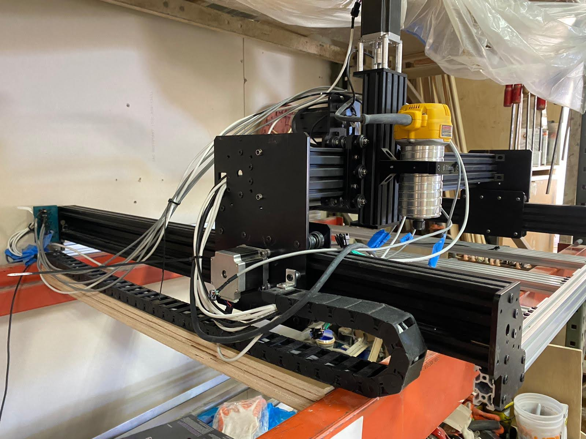
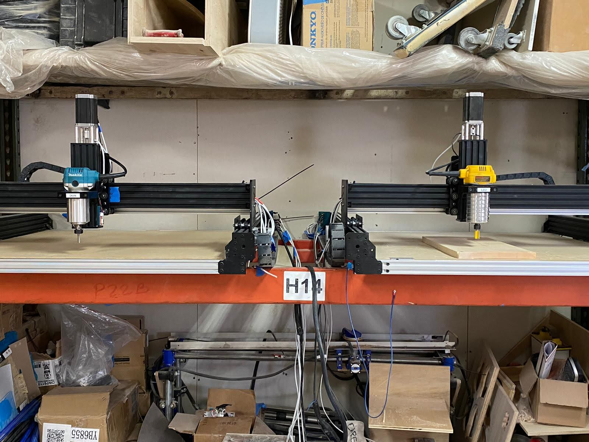
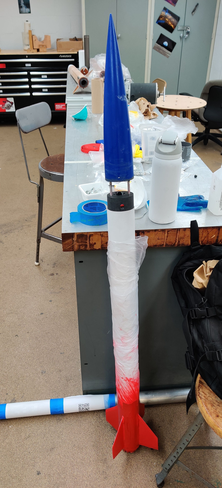
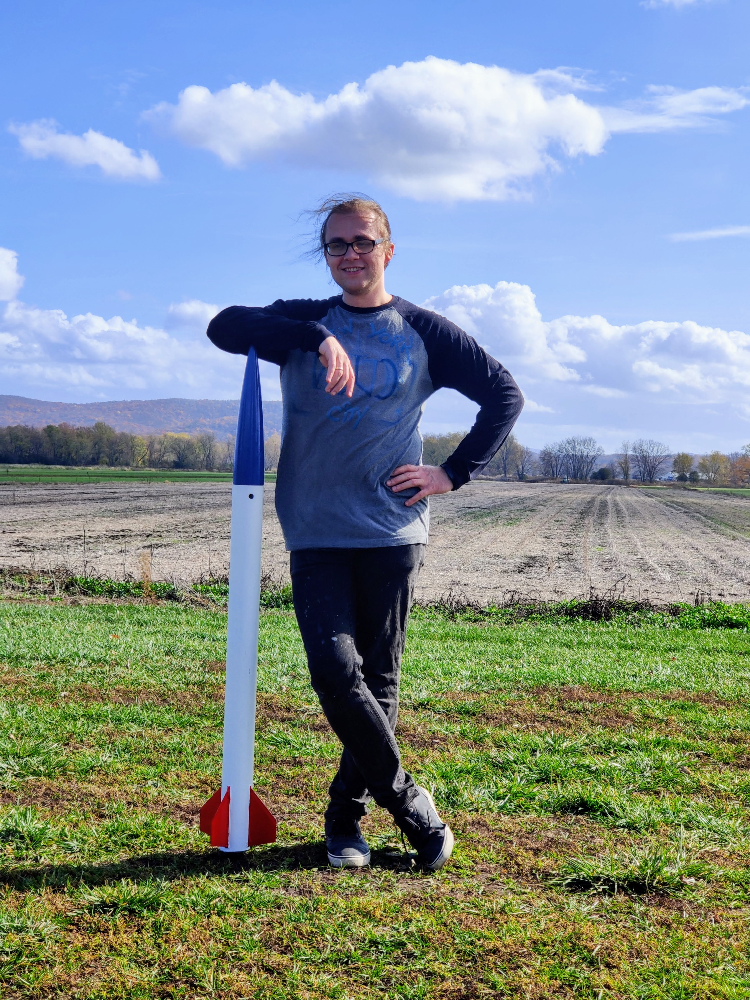

Engineer across mechanical, electrical, and software: CNC machines, robotics, controls, and AI production systems.
Note on GitHub: recent work (Woosh, Dramatis) lives in private company repos, 1,800+ commits since 2024. The demos below stand in for the code I can't show.
Seven years of building physical and software systems end to end: precision CNC machines delivered to paying customers, robotics and controls work at UC Berkeley (MEng, Robotics & Controls), and production AI platforms. Below is the work, mostly on video.
2019-2020
Perpetua Industries: Precision CNC Machines
Co-Founder & Lead Engineer · Brooklyn, NY
Designed, built, and delivered CNC machines from scratch, covering mechanical CAD, electronics, harnessing, firmware bring-up, and customer delivery. 5 pilot machines shipped, hitting 0.01″ repeatability with closed-loop control on Arduino GRBL and ESP32 FluidNC.
Control box prototype: drivers, power, and harnessing. One box drives two gantries.Machine cutting under load.

Prototype, side view.

Gantry synchronization tests: two machines driven from a single control box.
Drivetrain iterated as requirements outgrew each architecture: NEMA17 steppers → NEMA24 + routers → servo motors + dedicated spindles. Each jump driven by torque, rigidity, and duty-cycle limits found in testing.
Closed-loop motion control; 0.01″ repeatability verified on delivered machines.
Full lifecycle ownership: CAD → fabrication → wiring and harnessing → firmware configuration → bring-up → test → delivery.
Hardest problem: synchronizing two gantries from one control box, detecting and compensating racking and step loss without per-axis feedback on the early stepper architecture.
Collegiate rocketry with the City College Space Program. I designed the on-board camera enclosure, prototyped components, and worked the launch hands-on: setup, in-flight footage capture, and recovery at the METRA launch site in upstate New York.
Launch.In-flight footage from the USB camera in the enclosure I designed.

Prototype, almost ready.

Recovery day.
2023
7-DOF Sorting Cell: Vision-Guided Pick-and-Sort on a Moving Belt
UC Berkeley (EECS 206A, Intro to Robotics)
A Sawyer 7-DOF arm sorting packages off a moving conveyor: AR-tag tracking, prediction of future package positions on the belt, and continuous pick-and-sort cycles into bins.
Final demo: tracking, trajectory prediction, and sorting across multiple cycles.
Built the conveyor itself on an extremely constrained budget: dual stepper motors, 3D-printed pulleys, and paired belts to reach the working width, with variable speed control.
C++ motor control on Arduino; ROS (Python) for vision and motion planning.
Trajectory planner intercepts packages by predicting their future position from belt speed, not chasing their current one.
2023
MPC Quadrupedal Locomotion
UC Berkeley MEng, Controls · team of 3
Deep dive into a convex MPC locomotion controller for the Unitree A1 in PyBullet, based on the MIT Cheetah 3 formulation. We characterized its operating limits (top speed, terrain friction, control time step), benchmarked QP solvers across platforms, reformulated the optimization to support variable planning horizons, and compared against reinforcement-learning imitation policies. Use the chapters to jump to specific sections.
Python toolchain from Fusion 360 to FluidNC for high-accuracy, real-time XY motion on an ESP32-based plotter: G-code streaming over serial, video-to-drawing conversion, and a virtual plotter mode for testing without hardware.
Co-Founder, CEO & Technical Lead · Berkeley SkyDeck Pad-13, Batch 19
AI-augmented logistics platform turning commuter vehicles into less-than-pallet-load delivery capacity. I architected and built the WMS/TMS platforms end to end: driver app (Flutter), shipper portal (Next.js), and Firebase/Firestore backend with Google Maps services and fallbacks.
Platform demo: shipment creation in the shipper portal, acceptance and tracking in the driver app, live sync back to the shipper.
Full chain of custody: photo proof at pickup and drop-off, live driver tracking from route acceptance, permanent tracking history.
Warehouse-floor details built in: drag-and-drop or GPS-captured bay pins, hybrid Google-plus-saved-address search, business-hours conflict warnings at scheduling time.
Two supply modes: commuters picking up shipments along routes they already drive, and a job board for contractors balancing demand. Every account can act as both shipper and driver, so businesses can run their own fleets on the platform.
Agent-assisted engineering workflow with human-in-the-loop QA gates; ~86-93% test coverage across 120+ resolved issues.
2026
Dramatis AI Studios: Multi-Agent Audiobook Production
Founder & Technical Lead
An AI creative director that turns book manuscripts into fully produced audiobooks: multi-voice, scored, sound-designed. Custom multi-agent framework in Python with a tool-use loop, worker-pool parallelism, context compression for 200K+ token sessions, and automated QA with re-synthesis.
Pipeline overview and produced-chapter sample.
Multi-provider TTS orchestration (Gemini TTS, Chirp 3 HD, ElevenLabs, MiniMax; 76+ voices) cast and directed by an LLM director.
DSP production chain: Pedalboard effects/EQ, pyloudnorm broadcast loudness, NumPy/SciPy spectral fingerprinting for voice-consistency QA.
40+ chapters shipped with a design-partner author; ~$2-5 operating cost per finished chapter vs industry $5K-$50K per audiobook.